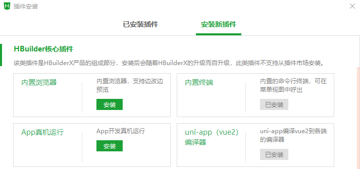

基于uni-app框架的微信小程序开发
讲解: 杨健辉
课程概要
微信小程序已成为生活中不可或缺的应用，例如北京健康宝、清华紫荆等。在此无需多言。
微信小程序开发框架有多种，如微信原生框架、uni-app等。
本教程将介绍基于uni-app框架的微信小程序开发。本着实用主义精神，本教程将着重带领读者了解uni-app开发的基本思路，而忽略具体原理。
本教程的先修知识是：了解Vue.js网页开发、HTML、JavaScript和CSS。
本教程用超链接关联大量相关文档，以便读者进一步学习。
在正式开始前，请读者下载示例代码文件。因为示例代码比较简单且附有注释，故不做赘述。
由于作者水平有限，如有错误，还请读者不吝赐教。联系邮箱为：yang-jh19@mails.tsinghua.edu.cn
uni-app框架
uni-app 是一个使用 Vue.js开发所有前端应用的框架，开发者编写一套代码，可发布到iOS、Android、Web（响应式）、各种小程序（微信/支付宝/百度/头条/飞书/QQ/快手/钉钉/淘宝）、快应用等多个平台。也就是说，我们会使用类似于Vue.js的风格写代码，uni-app会将代码转换为微信原生框架。
选择uni-app开发的好处是：上手快——直接依靠软院小学期的网页开发经验就可上手，无需学习微信原生框架。
软件安装
我们需要安装两个软件：HBuilderX和微信开发者工具。此外，还需要注册账号：HBuilderX使用的DCloud账号和微信公众平台的小程序账号。在进入下一步教程之前，请在这两个软件上登录账号。
由于篇幅所限，本教程将不介绍两软件的基本使用方式，请读者自行查阅。其基本思路是：在HBuilderX里创建小程序项目、编写代码并将代码转换到微信原生框架。在微信开发者工具里运行代码、查看效果。
项目初始化
在HBuilderX里创建小程序项目后，我们可以得到以下目录结构：
各文件的含义如下所示，本教程仅关注加粗的部分：
- pages是一个用来存放所有页面的文件夹。
- static是一个存放静态资源的文件夹，例如图片等。
- App.vue是页面入口文件，所有页面都是在
App.vue下进行切换的，可以调用应用的生命周期函数 - main.js是项目入口文件，主要用来初始化 vue 实例并使用需要的插件。
- manifest.json是应用配置文件，用于指定应用的名称、图标、权限等。
- pages.json是全局配置文件，可以配置页面文件路径、窗口样式、原生的导航栏、底部 tab 栏等。
- uni.scss是 uni-app 的样式包。在其他文件中可以快速引用样式包里面的样式。
此时，我们就可以通过点击运行--运行到小程序模拟器--微信开发者工具将项目运行到微信开发者工具上。在此状态下，我们每保存一次代码，项目都会自动编译并反映在微信开发者工具上，添加新文件除外。
页面注册
页面注册是为了确定页面文件的路径，以便后续调用。
常见的应用小程序包含：首页、列表页、详情页、个人页。
我们需要在pages.json中注册页面并配置导航栏，如下列代码所示。导航栏tabBar在注册时需要明确每一个按钮的图标（区分选择与否）、下方显示文字和页面路径。这样，我们就实现了导航按钮与页面的绑定。当我们点击导航按钮时，程序会自动跳转到相应页面。微信对导航栏的配置做出一定限制，难以实现动态修改。如果想实现动态修改，需要自己造轮子或使用第三方库。
//示例，仅包含首页与列表页的页面注册
"pages": [ //pages数组中第一项表示应用启动页，参考：https://uniapp.dcloud.io/collocation/pages
{
"path": "pages/index/index",
"style": {
"navigationBarTitleText": "uni-app"
}
},
{
"path": "pages/list/list",
"style": {
"navigationBarTitleText": "uni-app"
}
}
],
"tabBar": {
"list": [{
"iconPath": "static/index_icon.png",
"selectedIconPath": "static/index_icon_selected.png",
"text": "首页",
"pagePath": "pages/index/index"
},
{
"iconPath": "static/list_icon.png",
"selectedIconPath": "static/list_icon_selected.png",
"text": "列表",
"pagePath": "pages/list/list"
}
]
}
页面跳转
我们以点击列表项跳转到详情页为例，介绍相关知识。具体代码参见pages/list/list.vue和pages/detail/detail.vue。
示例的列表页实现了三个功能：动态生成列表页、页面跳转、传递参数。
列表页的动态生成比较简单，用v-for即可实现。需要注意的是：key属性需要为不重复的值。此外，当key值修改时，该组件会被重新渲染。如果我们动态修改组件属性后，组件没有发生变化，可以尝试修改key值（需保证唯一）。
<list-item v-for="(item,index) in image_list" v-bind:number="item.number" @click.native="redirect(item.number)"></list-item>
在uni-app中，实现页面跳转的函数是uni.navigateTo。更多页面出入栈操作参见路由。
页面间传参有多种方式实现，一个比较简单的做法是使用App.globalData。它的使用方式是：在App.vue里注册，然后使用getApp().globalData.xxx调用即可。就像一个普通局部变量那样赋值或取值。
当然，navigateTo函数本身也可传参。如果想使用状态管理，请使用vuex（main.js中定义）
//App.vue
<script>
export default {
...
// globalData是简单的全局变量，如果使用状态管理，请使用vuex（main.js中定义）
globalData:{
detail_id:"0"
}
}
</script>
//list.vue
redirect(index) {
//通过全局变量传参
getApp().globalData.detail_id = index;
uni.navigateTo({
url: '../../pages/detail/detail',
})
}
//detail.vue
//onReady为生命周期函数，参见生命周期函数部分的讲解
onReady(){
// 通过全局变量 跨页面传参
this.$set(this.$data, 'title', this.title+getApp().globalData.detail_id);
}
生命周期函数
生命周期函数是指：从对象的创建到销毁的过程中，所经过的一系列执行性函数。我们可以在这些函数中对每个时间点添加事件。例如，我们可以在页面加载(onLoad)和页面显示(onShow)两个时刻分别执行一些动作。这些动作就需要定义在该页面的对应生命周期函数中。在页面跳转部分的detail.vue代码中，我们在onReady函数中实现了标题的修改。onReady函数就属于生命周期函数。
在uni-app中，生命周期函数分为应用、页面和组件三部分。具体函数的说明参见文档即可，在此不做赘述。
读者只需在各种生命周期函数中设置打印动作，即可清晰地看到各个生命周期函数的执行。需要注意：导航栏页面和一般页面的销毁时机不同。
组件化
组件是一个单独且可复用的功能模块的封装。简单来说，就是自定义的标签。
本节将重点介绍组件的创建与使用、父组件向子组件传递参数。具体代码参见components/list-item/list-item.vue。
组件的创建与使用
组件的创建是简单的。建议读者的组件文件需要满足components/组件名称/组件名称.vue 的目录结构。这是因为当组件文件满足这一要求时，uni-app允许我们直接在页面中使用，而不必引用、注册。这一点与Vue不同。
需要说明，组件命名也有要求，它只能为以下两种形式：
- 使用 kebab-case
当使用 kebab-case (短横线分隔命名) 定义一个组件时，你也必须在引用这个自定义元素时使用 kebab-case，例如 <my-component-name>。
- 使用 PascalCase
当使用 PascalCase (首字母大写命名) 定义一个组件时，你在引用这个自定义元素时两种命名法都可以使用。 也就是说 <my-component-name> 和 <MyComponentName> 都是可接受的。
父组件向子组件传递参数
至于传参，子组件需要在props里声明用于接收父组件参数的变量，父组件使用v-bind来向子组件传参。
<list-item v-for="(item,index) in image_list" v-bind:number="item.number" @click.native="redirect(item.number)"></list-item>
最后，读者可能想要在一个组件的根元素上直接监听一个原生事件（例如，点击事件）。 这时，你可以使用 @事件的 .native 修饰符。不然将无法监听。
网络通信与拦截器
本节介绍使用Axios实现网络通信。
准备工作
-
安装HBuilderX插件：内置终端。方法是：在HBuilderX中点击工具--插件安装--安装新插件--内置终端。

- 点击左下方的终端（Alt+c），输入
npm install axios以安装Axios。安装成功后，根目录下会生成node_modules文件夹，在其中可以看到axios。
配置
在根目录下创建api目录，并在其中创建https.js、base.js、index.js和personApi.js文件。这四个文件的功能分别是：创建axios实例并设置拦截器（拦截器的作用是：在发出包前和收到包后对包做一些操作，比如打印出包的内容）；接口域名的管理，以使简化代码；对外统一暴露接口；定义person页的具体接口。此外，还需要在main.js中将axios和api挂载到Vue上以便于访问，并加入适配器代码以实现跨域。具体实现参见实例代码，不再赘述。
使用起来很方便，如下所示：
this.$api.person_api.getIdentityStr({
str:"Tsinghua"
}).then(res => {
if (res.data == null || res.data == "" || res.data == undefined) {
console.log("Error,,data is None");
} else {
var data = res.data.str;
this.$set(this.profile_text, 'nickname', data);
}
})
.catch((error) => {
console.log(error);
});
微信小程序
请读者注意：微信小程序只可以跟指定的域名进行网络通信，且必须使用 HTTPS/WSS 发起网络请求。
在开发阶段，可以在微信开发者工具里先设置不检查域名。
如果读者想发布小程序，则必须设置服务器域名。读者可以在微信工作平台中设置服务器域名。具体方法是：点击微信公众平台--开发--开发管理--开发设置--服务器域名。在设置域名后，通常需要等待几小时才会生效。读者可以取消不检查域名的设置，以检验是否生效。
杂项
原型设计
原型设计的重要性无需多言。在此介绍两个原型设计工具：墨刀和Figma。后者对团队协作更友好。
界面布局
建议优先使用Flex 布局。
尺寸单位
uni-app使用的尺寸单位是：rpx，它是一种根据屏幕宽度自适应的动态单位，其基准为750rpx。缩放公式为： 1px / 设计稿基准宽度 = 1rpx / 750rpx。简单来说，就是程序员只需考虑在750px的屏幕上绘制元素，程序会自动根据屏幕尺寸自动缩放元素大小。
如果不希望缩放，读者可以直接使用px。
组件标签
uni-app提供了一系列组件，即在<template>之间出现的各类标签。需要注意：uni-app将HTML里的标签也视作组件，并定义了HTML标签和uni-app内置组件的映射关系。例如，将div 改成 view。
特殊情况
如果uni-app没有提供所需功能，而微信原生框架提供了，可以尝试直接使用微信的属性而非uni-app的。
微信小程序的测试与发布
在开始之前，读者需要在微信公众平台注册小程序账号并填写相关信息。该账号会与微信绑定。
功能测试
上传代码
为了将代码上传到微信公众平台，我们需要设置小程序的AppId。它是小程序的唯一标识。具体操作如下：
- 获取AppId
- 将该AppId写入项目基本信息，具体操作为：微信开发者工具--右侧详情--基本信息--AppId修改
之后，我们点击微信开发者工具右上方的上传按钮即可。

上传代码后，可以在微信公众平台--管理--版本管理处查询到相关信息并使用体验版。
体验版与成员管理
只有管理员、项目成员和体验成员才能使用体验版小程序。具体管理方法参见官方文档。
这样，读者就可以使用小程序体验版进行功能测试了。
代码发布
微信小程序的发布共分三步：上传代码、提交审核、代码发布。其中，上传代码的步骤与上文一致，不再赘述。
需要注意的是：提交审核之前，每个微信小程序需要事先设置通讯域名，否则无法进行网络通信。如前文所述，小程序只可以跟指定的域名进行网络通信，且必须使用 HTTPS/WSS 发起网络请求。服务器域名的设置方法是：点击微信公众平台--开发--开发管理--开发设置--服务器域名。在设置域名后，通常需要等待几小时才会生效。读者可以取消微信开发者工具里不检查域名的设置，以检验是否生效。
提交审核
登录微信公众平台，进入开发管理，开发版本会展示已上传的代码，管理员可提交审核或是删除代码。
代码发布
代码审核通过后，需要开发者手动点击发布，小程序才会发布到线上提供服务。
详情参见微信官方文档。
更多
通过阅读本教程，相信读者对基于uni-app框架的微信小程序开发有了基本的了解。当然，如果想优雅地写出高质量代码，亦或是满足复杂需求，仅仅依靠上述知识是不够的。读者可以自行搜索或阅读uni-app官方文档、[微信开放文档 以进一步学习。
由于作者水平有限，如有错误，还请读者不吝赐教。联系邮箱为：yang-jh19@mails.tsinghua.edu.cn
本站总访问量次